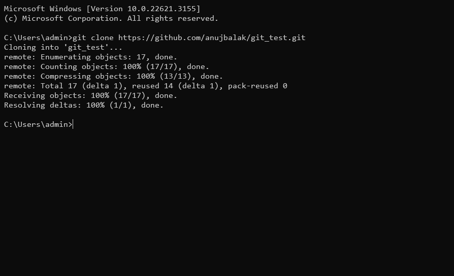

Clone A Github Repository
- Opne Terminal in you computer
- make sure you already have installed
git
- execute command
git clone [Repository Link]
you can also follow Find A GitHub Repository Link if you don't know how to find GitHub Repository Link
you are done!

Screenshot